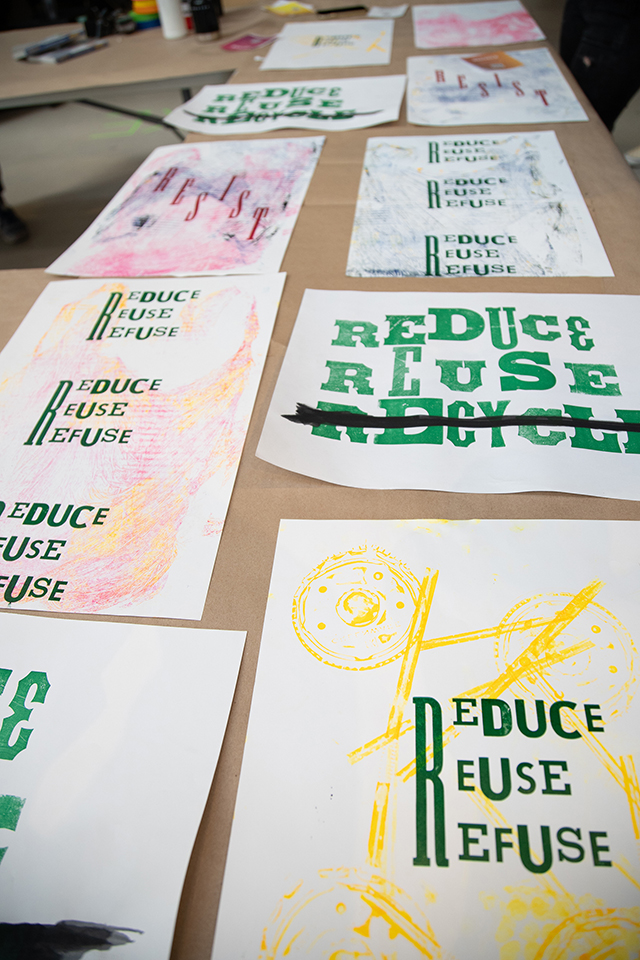
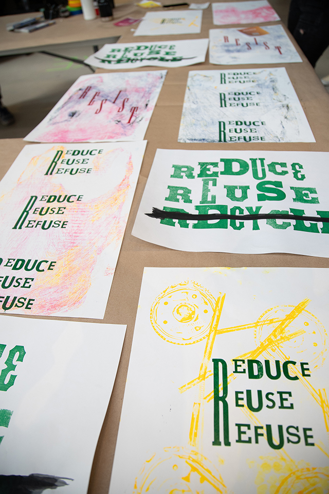

Students in Massachusetts College of Art and Design's Spring 2019 interdisciplinary elective, Disobedient Design, created a collaborative, augmented reality art workshop for a Climate Resilience Forum about the effects of pollution in our underwater ecosystems.
Students took on the issue of recycling, asking the public to rethink the popular slogan: reuse, reduce, recycle; they created letterpress posters to be displayed during the workshop and original 3D trash assets for an web-based augmented reality ocean scene.
Letterpress Posters
Students created posters for the workshop on the letterpress; each poster featured an original slogan and many used textures created from printing with plastic trash they found around the school.

 

The Workshop
The workshop set up in the Design and Media Center atrium of the college. Passing participants were asked to create original artwork that would become the skins of the 3D trash objects the students had designed and built as part of their coursework.
See the art-covered trash in our augmented reality ocean environment, here.
More information about the Climate Resilience Forum, here.